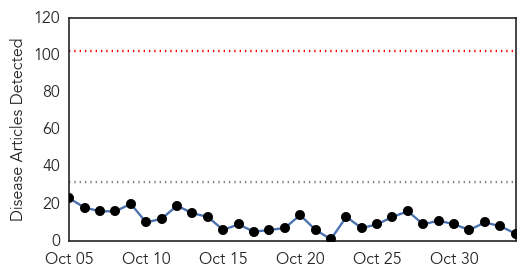
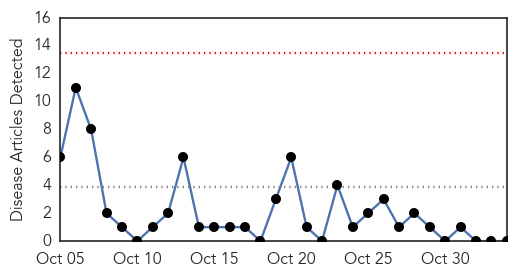
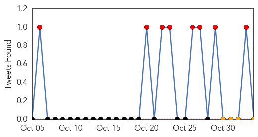

Dengue Fever
30-Day Web Trend
0 alerts, 0 warnings

30-Day Twitter Trend
3 alerts, 3 warnings

Article Locations

Article Confidences

Top Articles:
- 0.992
- Why 10 cases of dengue fever in Hawaii are much scarier than the rest
- 0.984
- Hawaii Health Department confirms 10 cases of locally-acquired d
- 0.714
- Taipei City Hall to disinfect its office floors after dengue contract
- 0.569
- Bollywood favourite Nawazuddin Siddiqui 'suffering from dengue,' hospital source says
Top Tweets:
- 0.762
- Flavivirus news: Hawaii Health Department confirms 10 cases of locally-acquired dengue fever - ... https://t.co/PBnvpmEhX4 pathogenposse
- 0.729
- RT: US - Hawaii: 10 Confirmed Cases Of Dengue Fever On Hawaii Island https://t.co/ODawSxxuzi h/t Pathfinder
- 0.686
- Flavivirus news: 50 more dengue cases reported in Ghaziabad - Hindustan Times: Hindustan Times5... https://t.co/9kpk3c9TmY pathogenposse
MERS
30-Day Web Trend
0 alerts, 0 warnings

30-Day Twitter Trend
3 alerts, 0 warnings

Article Locations

Article Confidences

Top Articles:
-
No articles found for Nov 03, 2015
Top Tweets:
-
No tweets found for Nov 03, 2015